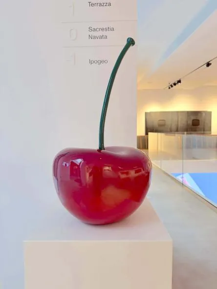

da ven 6 nov a mer 23 dic
LA FONDAZIONE ALBERTO PERUZZO GUARDA AL FUTURO: UNA NUOVA FASE, NUOVE PROSPETTIVE, NOVITÀ IN ARRIVO
La collezione cresce con Kiefer, Kounellis, Longo e Andre, un Comitato scientifico internazionale e la new entry Palazzo Lanza: la Fondazione inaugura una nuova stagione del proprio progetto culturale consolidando il proprio ruolo nel panorama dell’arte moderna e contemporanea
 Indicazioni
Indicazioni
- Costi e prenotazioni
- Costo non indicato · Prenotazione non indicata
- Programma
- Programma da verificare. Apri la fonte ufficiale per orari e possibili aggiornamenti.
- In caso di maltempo
- Nessuna indicazione specifica pubblicata.
- Note
- Acquisito automaticamente dalla fonte.
L’EVENTO
Descrizione completa
La collezione cresce con Kiefer, Kounellis, Longo e Andre, un Comitato scientifico internazionale e la new entry Palazzo Lanza: la Fondazione inaugura una nuova stagione del proprio progetto culturale consolidando il proprio ruolo nel panorama dell’arte moderna e contemporanea
Una nuova fase per la Fondazione Alberto Peruzzo, che si prepara ad ampliare il proprio progetto culturale attraverso nuove acquisizioni, una maggiore strutturazione scientifica e l’apertura di nuovi spazi dedicati all’arte moderna e contemporanea. Tra le principali novità figurano l’ingresso nella collezione di opere di Anselm Kiefer, Jannis Kounellis, Robert Longo e Carl Andre, la costituzione del primo Comitato scientifico e il progetto di Palazzo Lanza in via Dante, destinato a ospitare l’intera collezione Alberto Peruzzo.
Alberto Peruzzo, imprenditore, collezionista e fondatore della Fondazione ha scelto, fin dalla sua istituzione nel 2015, di promuovere e valorizzare l’arte contemporanea. Dal 2023, con l’apertura della sede espositiva, la collezione è stata messa a disposizione del pubblico, diventando uno strumento di conoscenza e condivisione, con l’obiettivo di avvicinare un pubblico sempre più ampio all’arte contemporanea e di alimentarne curiosità e passione.
La Fondazione Alberto Peruzzo apre una nuova fase del proprio percorso, ampliando il progetto dedicato all’arte contemporanea attraverso il dialogo tra due spazi complementari: l’ex Chiesa di Sant’Agnese e Palazzo Lanza, destinato a diventare un nuovo polo espositivo di oltre 2.500 metri quadrati, attualmente in fase di restauro con conclusione dei lavori prevista per la fine del 2027.
In questo percorso di rinnovamento, il 6 novembre sarà inaugurato il nuovo percorso espositivo presso l’ex chiesa di Sant’Agnese con una selezione di opere della collezione della Fondazione presentate nello spazio della Sacrestia. Durante questo periodo, lo spazio sarà visitabile dal giovedì al sabato esclusivamente su prenotazione. Il nuovo allestimento permette di scoprire alcune opere della collezione, tra cui tre nuove acquisizioni, i lavori di Giorgio Laveri, Salvatore Scarpitta e Graham Sutherland.
Restituita alla città grazie al progetto di recupero e restauro promosso dalla Fondazione, l’ex Chiesa di Sant’Agnese si conferma un luogo centrale per le attività dell’istituzione. Il valore dell’intervento è stato riconosciuto anche dalla menzione speciale al Premio IN/ARCHITETTURA 2026 – Triveneto. Insieme a Palazzo Lanza, la chiesa contribuirà a delineare un sistema integrato di spazi in cui patrimonio architettonico, collezione e nuove proposte espositive potranno dialogare, rafforzando il ruolo della Fondazione nella promozione dell’arte contemporanea.
La collezione Alberto Peruzzo, composta da oltre 180 opere di artisti italiani e internazionali e sviluppata a partire dalla fine degli anni Ottanta, attraversa più di un secolo di storia dell’arte, dal Novecento alla contemporaneità. Tra le acquisizioni più recenti figurano, tra le altre, due opere di Anselm Kiefer, che saranno al centro della mostra primaverile della Fondazione, a cura di Riccardo Caldura, Professore all’Accademia di Belle Arti di Venezia. La mostra sarà tra i primi appuntamenti della nuova stagione espositiva e conferma la volontà della Fondazione di trasformare le nuove acquisizioni in occasioni di ricerca, approfondimento e confronto, attraverso prestiti e collaborazioni con le principali realtà del panorama culturale internazionale.
A questo proposito Alberto Peruzzo sottolinea: “Per me collezionare significa continuare a cercare e a lasciarsi sorprendere dall’arte. Oggi vorrei che questa passione potesse tradursi sempre di più in occasioni di confronto e di condivisione: con gli artisti, con altri collezionisti, con le fondazioni e con le istituzioni. Continuare a collezionare, fare mostre, esporre le opere e metterle in relazione con altre esperienze: è questo il percorso che vorrei continuare a costruire”.
Nasce il primo Comitato scientifico
A sostenere questa nuova fase sarà anche il primo Comitato scientifico della Fondazione Alberto Peruzzo, formato da autorevoli protagonisti del mondo della cultura. Il Comitato accompagnerà la Fondazione nella definizione delle linee culturali, nella programmazione espositiva e nello sviluppo di nuovi percorsi di ricerca oltre che agevolare valide relazioni nazionali e internazionali.
La sua costituzione rappresenta un ulteriore passaggio nella strutturazione dell’istituzione e nel rafforzamento della sua dimensione scientifica. L’obiettivo è costruire un modello nel quale collezione, ricerca, conservazione, produzione espositiva e formazione possano procedere in modo integrato.
Palazzo Lanza: la nuova sede dell’intera collezione
Palazzo Lanza assume un ruolo centrale nella nuova fase della Fondazione. Lo storico edificio dell’Ottocento, caratterizzato da importanti ambienti del piano nobile affrescati dall’artista Giovanni de Min, consentirà di ampliare significativamente gli spazi, le attività e la progettualità dell’istituzione. La nuova sede nasce con l’obiettivo di andare oltre la tradizionale funzione espositiva, accogliendo l’intera collezione e mostre temporanee, ma anche sviluppando un programma articolato di mostre e progetti site-specific, attività didattiche e formative, incontri, workshop e iniziative rivolte a pubblici diversi. Particolare attenzione sarà dedicata alle residenze d’artista, pensate come occasione di produzione e confronto con il territorio, mentre le attività di formazione potranno coinvolgere scuole, giovani, università e un pubblico più ampio. Queste attività contribuiranno a rafforzare le collaborazioni con musei, fondazioni e istituzioni culturali italiane e internazionali, favorendo prestiti, scambi e progetti condivisi e promuovendo il dialogo della collezione con altri patrimoni culturali.
Padova come punto di partenza di una rete internazionale
Con sede a Padova, la Fondazione Alberto Peruzzo riparte dalla propria collezione e dal rapporto con il territorio per sviluppare nuove progettualità nell'ambito dell'arte contemporanea. Il rilancio guarda oltre i confini cittadini, con l'obiettivo di costruire collaborazioni con artisti, curatori e istituzioni e di portare le opere e le iniziative della Fondazione in contesti diversi. Allo stesso tempo, il confronto con altre esperienze culturali potrà tradursi in nuove occasioni di ricerca, approfondimento e fruizione dell'arte a Padova. Un percorso che mette in relazione la dimensione locale e quella nazionale e internazionale, facendo della collezione non soltanto un patrimonio da valorizzare, ma una risorsa da cui generare nuove iniziative e relazioni.
Dal collezionista all’istituzione
La storia della Fondazione Alberto Peruzzo può allora essere letta come il passaggio progressivo da una collezione privata a una responsabilità pubblica. È questo forse il significato più autentico del mecenatismo perseguito da Alberto Peruzzo: trasformare una passione individuale in una possibilità collettiva. La prospettiva è quella di una Fondazione
aperta, mobile e internazionale
, capace di far dialogare la propria collezione con le maggiori istituzioni culturali, di sostenere nuovi progetti espositivi, di collaborare alla crescita culturale del territorio e di portare l’arte anche fuori dai propri spazi, attraverso collaborazioni, prestiti, iniziative outdoor e nuovi format. Per Alberto Peruzzo, la sfida resta quella di andare oltre il collezionismo: creare le condizioni perché l’arte possa essere conosciuta, approfondita, discussa e condivisa. È da questa idea di condivisione che prende forma il nuovo capitolo della Fondazione: un progetto che guarda a Padova e, attraverso l’arte contemporanea, al dialogo con il mondo.
Sant’Agnese | Via Dante Alighieri 63 | Padova
Bookshop Dante61 | Via Dante Alighieri 61 | Padova
Orari e modalità di visita
Giorni di apertura | dal giovedì al sabato
Aperture straordinarie | 29 novembre, 8 dicembre, 21,22,23 dicembre
Orari delle visite | 11:00, 13:00, 15:00, 17:00
Durata visita guidata | 45 minuti
Prenotazioni su Eventbrite | *link di prenotazione*
Accesso agli spazi esclusivamente da via Sant’Agnese. Per maggiori informazioni su come raggiungere lo Spazio Sant’Agnese, consultare il sito della Fondazione alla pagina dedicata.
Accessibile esclusivamente su prenotazione e visita guidata
Per maggiori informazioni scrivere a prenotazioni@fondazionealbertoperuzzo.it
CONTATTI FONDAZIONE ALBERTO PERUZZO:
SITO WEB: https://fondazionealbertoperuzzo.it/
E-MAIL: info@fondazionealbertoperuzzo.it
INSTAGRAM: https://www.instagram.com/fondazionealbertoperuzzo/
FACEBOOK: https://www.facebook.com/FondazioneAlbertoPeruzzo/
IL PROGRAMMA
Programma e orari
Appuntamenti raccolti dalle fonti elencate. Dove manca un orario, non è ancora disponibile in questa scheda.
Programma pubblicato
- Dal 2026-11-06 al 2026-12-23
INFORMAZIONI UTILI
Prima di partire
- Controllare la fonte prima di partire.
ORGANIZZAZIONE